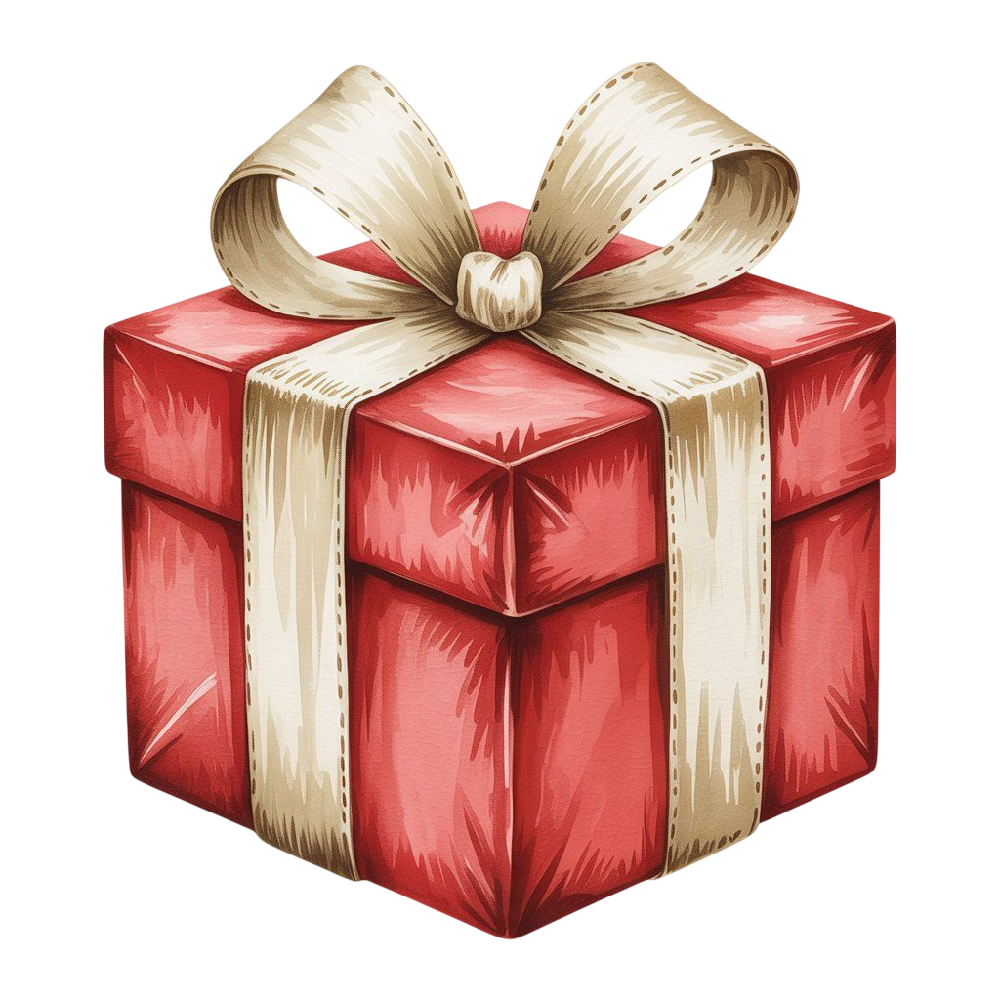
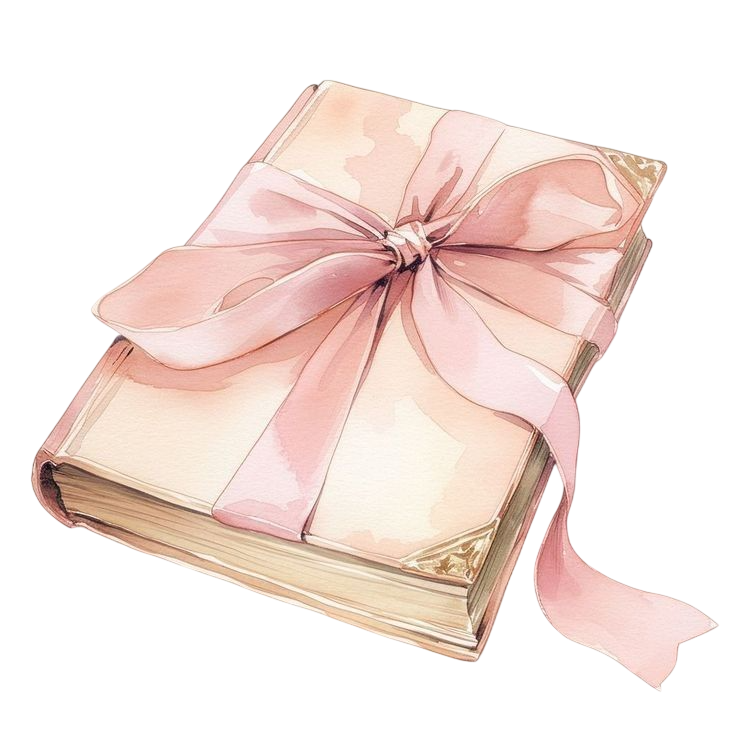

Carta para Yaki 💙
Con mucho cariño te dedico estas palabras...

Carta para Luz 🤍
Con mucho cariño te dedico estas palabras...
Carta para mi Amor ❤️
Con mucho cariño te dedico estas palabras...
Con mucho cariño te dedico estas palabras...
Con mucho cariño te dedico estas palabras...
Con mucho cariño te dedico estas palabras...
Te amo, te quiero, te adoro, te beso, te abrazo y no te suelto. ❤️
Desde que apareciste en mi vida, todo dio un giro muy grande. Cuando todo parecía perdido, cuando mis ojos se llenaban de lágrimas y mi mente se nublaba de oscuridad, tú apareciste entrando en lo más profundo de mi ser, casi como si estuvieras tocando mi alma... aunque al final lograste tocar algo más que solo mi alma.
Lo siento si a veces no paro de mirarte, es solo que... como apartar la mirada con un ángel al lado mío, brillante y hermosa como la primera vez que te vi. Sé que te lo he dicho muchas veces, pero aún no son suficientes, desde la primera vez que te vi, me enamoré de tus ojos, tus manos, tus labios, tu rostro, tu forma de caminar, tu manera de hablar, tu forma de mirar... estoy amando cada parte de ti, cada pequeña parte de ti, cada detalle. Amo cómo eres, tu forma de ser, tu personalidad alocada, tranquila y buena, eres alguien que me enamora cada día más.
Gracias por mostrarme lo bonito que puede ser la vida al lado de alguien que estimas mucho, que te importa y que quieres. Gracias por mostrarme el significado de esta palabra llamada amor, sé que esto recién está comenzando y estoy muy emocionado por todo esto y por lo que vendrá, esta vez hay que enfrentar las cosas juntos, ya no estás sola, ahora me tienes a mí, mi dulce y cariñosa señorita.
Cómo estás? Esas fueron mis primeras palabras después de vernos por un largo tiempo, desde que nos conocimos, desde que estuve al lado tuyo, sentía una atracción que luego se convertiría en algo más que solo una atracción, cada vez que nos encontrábamos, sentía una sensación; cada vez que te miraba pensaba: "Esta chica es muy bonita" Algunas veces, cuando te dejaba sola, sentía una pena en mí y un raro sentimiento difícil de explicar. Cuando estabas triste te abracé entre mis brazos, ese día se me abrió una pequeña ventana de luz en mi corazón. Antes de hablarnos, venían pensamientos a mi cabeza de "acércate a ella", "háblale", pero nunca lo pude hacer. Al final nos hablamos solos, fue una conexión instantánea que creí que sería algo pasajero, pero se volvió tan natural que me agradaba. Compartimos algunos momentos memorables, compartimos canciones y anécdotas, compartimos nuestro dolor... realmente me atraías.
Gracias por ser mi amiga, gracias por volverte alguien especial a quien pude contarle algunos de mis secretos y miedos más profundos. Eres una buena amiga y realmente estoy feliz de haber encontrado a alguien como tú, te agradezco todo este tiempo por compartir juntos, mi querida luz, mi hermosa luna.
Estoy muy feliz de haberte esperado todo este tiempo, estuve anhelando tanto este momento, te estuve soñando tanto todo este tiempo sin saber que serías real. Me haces creer en el amor, me haces ver de diferente manera este mundo, le das color y calor a mis días oscuros y fríos, le das un sentido y perspectiva diferente a esta vida.
Estoy muy enamorado de ti, realmente me quedo sin palabras cuando te veo, realmente me haces replantearme todo mi futuro solitario a uno al lado tuyo, te pienso en cada momento de mi día, es muy agradable escucharte y sentirte en las noches cuando cantas, cuando hablas o hasta cuando te quedas en silencio. Realmente me enamoro de ti cada segundo, cada minuto y cada día que estoy a tu lado. Te siento a mi alrededor, puedo sentir tus cálidas manos y tu alma al lado mío. Siento que este sentimiento se transforma en algo cada vez más grande que me da miedo perderte.
Deseo tener un futuro contigo. Sé que en estos momentos es algo complicado vernos o pasar tiempo juntos, aunque un minuto a tu lado es suficiente. Realmente tenemos planes a futuro, sueños por cumplir, experiencias por vivir, lugares por visitar, músicas por escuchar, películas por ver, tener una familia, tener hijos, tener mascotas, tener golems, viajar al espacio... realmente quiero vivir todas estas cosas contigo. Quiero que seas tú la persona con quien viva, experimente y muera. Deseo pasar mis ultimos cinco minutos contigo.

Primero que todo Yaki cuando estes leyendo esta carta yo estare lejos, muy lejos de ti... me resulta dificil el echo de pensar en no estar contigo por un largo tiempo, creo que en todo el tiempo que llevamos juntos eh amado a escucharte, a sentirte, a olerte, a caminar juntos, a ver el mundo desde diferentes perspectivas, a conocer nuevas cosas, a compartir tiempo y vida el uno del otro, a mostrar una parte que nadie debe ver pero que solamente nosotros dos podemos compartir... gracias por mostrarme tus miedos, gracias por enseñarme tus demonios, gracias por caminar junto ami y mostrarme esa bonita sonrisa, gracias por dejarme ver tu alma y tu cuerpo al desnudo, gracias por existir y por ser como eres... ahora que veo todo con mas claridad, todo de ti... puedo estar seguro de lo que siempre crei, eres perfecta... te vi desde diferentes perspectivas y para mi siempre seras perfecta, eres un sueño echo realidad, eres lo mas hermoso que me esta pasando en este mundo cruel y gris pero tu... mi amor, tu me haces ver el mundo de colores, nunca pense vivir esto, nunca crei vivir un romance lleno de sueños, promesas, metas, planes, luchas, confusiones... un romance o mejor dicho un amor lleno de sentimientos y emociones, un amor que crei que solo existia en mi mente, un amor que nunca voy a olvidar y que estoy feliz de compartir todo este amor contigo... 🤍
Yaki la verdad es que hay cosas que en persona me es dificil decirte por que cuando te veo a los ojos me pones tan nervioso que no se como describir todo lo que siento al verte... es algo inefable lo que siento, solo te tengo que decir que aunque soy una persona solitaria que desea estar solo en todo momento, ahora deseo estar contigo en todo momento, quiero compartir mi soledad contigo, quiero escucharte hablar todas mis mañanas, mis tardes y mis noches, quiero verte en mis sueños, en mis fotos y en mis recuerdos, quiero abrazarte para que no sientas frio, quiero compartir mi calor contigo, quiero ser tu musica para que no escuches a tu mente de tus pensamientos mas profundos, quiero ser tu compañia de vida, quiero muchas cosas en esta vida pero lo que mas deseo es estar contigo por el resto de mi vida aunque si te soy sincero... solo quiero que seas feliz, quiero ver a la mujer en quien te convertiras, quiero verte realizada, quiero verte todos mis días y hacerte feliz, quiero apoyarte en los momentos mas dificiles, quiero escucharte y tratar de entenderte, quiero una vida contigo... te amo Yaki... me enamorastes desde el primer momento en que te vi, solamente te puedo decir que gracias por todo y esperame un poquito para estar ahorrando para un mejor futuro para los dos, nuestros esfuerzos de hoy se veran reflejados mañana... 💙
Mi amor, quiero que sepas que estoy muy orgulloso de ti mi querida señorita, realmente estoy muy feliz por verte sonreir y reir, por ver tus ojos brillar como la luna en la noche... mi hermosa luna... se todo el esfuerzo que haces por mejorar tu mente y cuerpo, se lo mucho que te esfuerzas por conseguirlo... quiero que sepas que eres alguien bastante fuerte y valiente, estoy muy feliz de tener a alguien como tu en mi vida.... solamente te puedo decir que lo estas haciendo muy bien y estoy orgulloso de ti, sabes que puedes contar conmigo para todo, quiero estar en todo momento para ti, ya sea en momentos dificiles, momentos de felicidad, momentos de tristeza, momentos de ansiedad, momentos de ira, momentos de exito, momentos de paz, quiero estar contigo para apoyarte y que puedas ver a la gran mujer que yo veo... losiento si a veces me quedo mirandote como tonto es solo que... como podría apartar la mirada teniendo un angel al lado... eres lo mas hermoso que he visto y conocido, Yaki mi amor, yo mori... viviria por ti mi amor... te amo ❤️
Te amo Yaki, te amare hoy, mañana y siempre... probablemente cuando estes leyendo esto estare echado en la oscuridad mirando el cielo y pensando en el hermoso regalo que recibi este año... estare pensando en mi Luna... ella tiene una Luz muy brillante que hace iluminar mi camino de noche, hace que me enamore de ella un poco mas que ayer, hace que el frio de mi cuerpo se vaya... gracias por darme tu calor en este año, gracias por darme todo tu amor y cariño yo aprecio y amo mucho todo lo que me has dado... 🤍
Mi querida señorita, yo te amaré hoy, mañana y siempre. 🤍

Mi hermosa señorita eres lo unico que quiero para toda mi vida. ❤️